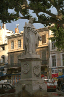
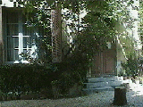

４頭のイルカの噴水

 |
NEWSWEEK誌で“移住してみたい街ベスト10”に選ばれたエクス・アン・プロヴァンスは一言でいえばとてもシックな街。とりわけ見事なのはメインストリートにあたるミラボー通りのプラタナス並木である。私たちの訪れた６月はこの通りに手工芸品の市がたつ季節であった。写真右の緑の日除けは画家セザンヌなじみのカフェ“ドゥ・ギャルソン”。  ミラボー通り （拡大GIF 96K)
エクスには他にもセザンヌゆかりの場所がたくさんある。その一つ“セザンヌのアトリエ”は市の中心部から少し離れたところ、その名もポール・セザンヌ通りの長い坂道の途中にある。Office de ToulismeでCIRCUIT CEZANNEというパンフレットをもらうとわかりやすい。 南仏の町の広場には必ず噴水があったが、特にエクスには噴水が多く、いいランドマークに使える。ローマ風の人や動物の口から水が出るタイプが多かったが、一番気に入ったのが4頭のイルカの噴水だ。どう見てもイルカというよりしゃちほこの方が近いような気がしませんか。 |